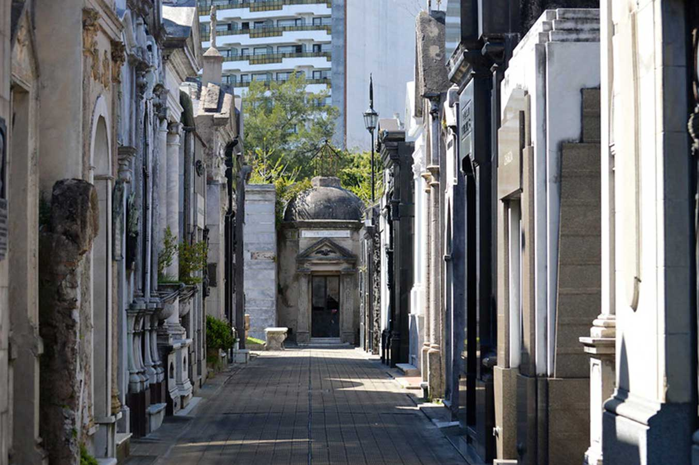
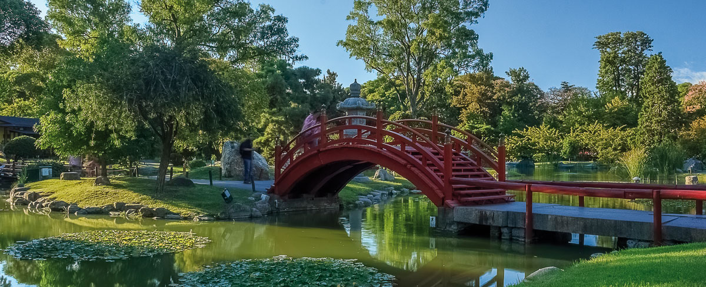

Cementerio de la Recoleta
Alberga más de 90 bóvedas declaradas Monumento Histórico Nacional.
Café Tortoni
Bar notable ubicado en el barrio de Monserrat, el más antiguo de la ciudad.

Floralis Genérica
Esta escultura de 20 metros es la primera en movimiento controlada hidráulicamente.

Teatro Colón
Con más de 100 años de vida, es uno de los teatros más importantes a nivel mundial.
Ateneo Grand Splendid
Fue elegida como la segunda librería más importante del mundo.
Jardín Botánico
Es un lugar agradable para pasear y cuenta con más de 1580 especies vegetales.

Jardín Japonés
Es el parque más grande de estilo japonés fuera del país nipón.

Planetario Galileo Galilei
Es el principal centro de divulgación de astronomía de la ciudad.

Barrio Chino
Podemos encontrar una variada oferta de comercios y restaurantes orientales.